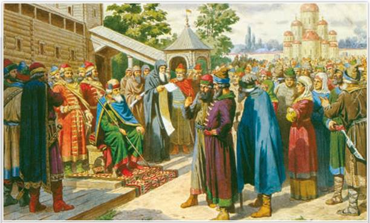
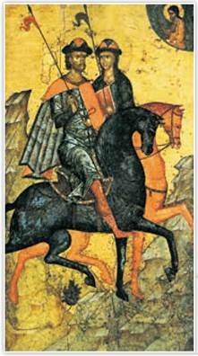
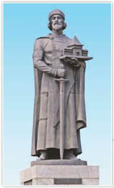
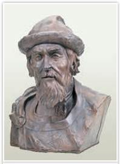
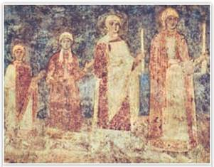

Чтение народу Русской Правды в присутствии великого князя Ярослава. Художник А. Кившенко. 1880 г. Центральный военно-морской музей. Санкт-Петербург
На картине изображён момент оглашения первого письменного свода законов Руси. Действие происходит перед княжеским теремом.
РОССИЯ
МИР
1. Борьба между сыновьями Владимира. Очевидно, Владимир Святославич хотел видеть наследником киевского престола своего сына Бориса. Великий князь приблизил к себе Бориса, вызвал его в Киев. Историки предполагают, что Святопблк и Ярослав, как старшие сыновья, были недовольны планами отца. Святополк составил заговор, который был раскрыт, а Ярослав, управлявший Новгородом, не отправил отцу в Киев положенную дань.
Подробнее. После смерти Владимира в 1015 г. между его сыновьями разгорелась борьба за киевский престол. Борис не принял участия в усобице. Летописец записал от имени Бориса: «Не подниму руки на брата старшего: если и отец у меня умер, то пусть Святополк будет мне вместо отца». Так молодой князь понимал христианские ценности. Согласно «Повести временных лет», братья Борис и Глеб погибли по приказу Святополка. Церковь причислила павших братьев Бориса и Глеба к лику святых мучеников. Они стали первыми русскими святыми. К их памяти обращались князья в надежде прекратить усобицы.
Ярослав, желая занять Киев, нанял за морем варягов. В ожидании похода его варяжская дружина буйствовала в Новгороде, чинила насилие, за что и была перебита новгородцами. В отместку Ярослав расправился с новгородскими боярами. Вскоре пришла к нему весть из Киева о смерти отца и убийстве Бориса и Глеба.
Ярослав собрал вече и сказал: «Братья! Отец мой Владимир умер; в Киеве княжит Святополк. Я хочу идти на него войной — поддержите меня!» Новгородцы согласились помочь Ярославу, но с условием, что князь даст им устав — грамоту, которая узаконит их «вольности» (особые права Новгорода).

Святые Борис и Глеб на конях. Икона. Середина XIV в. Государственная Третьяковская галерея. Москва
Жители города собрали дань. С дружиной из новгородцев и вновь нанятых варягов Ярослав двинулся на юг. Святополк тоже стянул силы — киевлян и печенегов. Осенью 1016 г. полки сыновей Владимира встали по разным берегам Днепра. Долго противники не решались начать переправу. Но однажды на рассвете Ярослав перешёл реку и разбил войско брата. Побеждённый Святополк, названный в летописи Окаянным, бежал в Польшу, а киевляне приняли Ярослава на княжение (1016—1018).
2. Первый свод письменных законов. В 1016 г. новгородцы получили от своего князя грамоту, которая стала известна как Правда Ярослава. С неё началось формирование Русской Правды — первого свода письменных законов на Руси.
Правда Ярослава содержала статьи о нанесении побоев, краже чужого имущества, взыскании долга, бегстве зависимых людей и др. Но особую значимость имела статья об ограничении кровной мести — древнего устного правового обычая, по которому семья убитого имела право на «ответное» убийство. Правда Ярослава ограничила кровную месть кругом ближайших родственников. Теперь мстить могли только сыновья, отцы и братья. Если родственников не было или они не хотели мстить, убийца платил денежный штраф в пользу князя.
Единый свод законов обеспечивал определённый порядок при назначении наказания, укреплял княжескую власть.
Позднее потомки Ярослава пополнили Русскую Правду новыми статьями — появились Правда Ярославичей (1072) и Устав о резах и закупах (1113) Владимира Мономаха.
3. Распри князей. В 1019—1023 гг. продолжались княжеские раздоры. Святополк вместе с будущим польским королём Болеславом Храбрым занял Киев. В 1019 г. Ярослав с новгородцами и варягами вновь победил Святополка и помогавших ему печенегов. Бой случился у места гибели Бориса на реке Альте. Святополк бежал и пропал бесследно где-то в Европе.
В 1021 г. племянник Ярослава полоцкий князь Брячислав Изяславич захватил Новгород, вывез оттуда много имущества и людей. Ярослав разбил Брячислава и вернул новгородцев с их добром домой. На юге же поднял меч против Ярослава его брат Мстислав, князь Тмутараканский. Мстислав разгромил Ярослава, но закрепиться в Киеве не сумел. В итоге братья поделили Русь по Днепру. Только после смерти Мстислава (1036) началось единоличное правление Ярослава Владимировича в Киеве.
4. Внутренняя политика Ярослава. Правление Ярослава историки называют временем расцвета Руси. Князь был большим любителем учёности и просвещения. Не зря историки назвали его Мудрым. По приказу Ярослава в Киеве создали мастерскую, в которой монахи переписывали и переводили сочинения греческих авторов, привезённые на Русь из Византии. Книжная мастерская находилась в Софийском соборе, который начали строить в 1037 г. Там же была создана первая библиотека.
При Ярославе развивалось русское летописание. Если при Владимире записывали отдельные исторические события, то в княжение Ярослава уже составили подробную летопись. В начале XII в. монах Киево-Печерского монастыря Нестор включил её в свою «Повесть временных лет».
Великий князь Ярослав заботился о распространении христианства на Руси. В его правление строились новые храмы и монастыри. Величественный Софийский собор в Киеве, возведённый греческими мастерами и их русскими учениками, был подражанием знаменитой Софии Константинопольской.
В 1051 г. главой Русской церкви стал священник княжеского храма Иларион — первый митрополит, русский по происхождению. До него этот важный пост на Руси всегда занимали греки, присылаемые из Константинополя. По мнению ряда историков, в избрании Илариона митрополитом проявилось желание Ярослава не зависеть от Византии. Иларион известен как автор первого древнерусского сочинения — «Слова о Законе и Благодати», где прославлялся князь Владимир Святославич и утверждалось равенство Византийской империи и Руси.

Памятник Ярославу Мудрому. Скульптор О. Комов. 1993 г. Ярославль
В одной руке князь держит меч, в другой — макет города, названного его именем.
ТОЧКА ЗРЕНИЯ
Из книги историка Д. Володихина «Рюриковичи»
Смолоду жестокий воитель, честолюбец и мятежник, в зрелом возрасте он принял на себя ответственность за огромное «хозяйство» державы и понёс его достойно, а под старость обернулся крепко верующим христианином, мудрым книжником, законодателем.
Как историк характеризует личность Ярослава Мудрого в разные периоды его жизни? Какие факты говорят о том, что в зрелые годы Ярослав стал «крепко верующим христианином, мудрым книжником, законодателем»?
Ярослав заботился о строительстве и укреплении городов. При нём разросся и разбогател Киев. Парадный въезд в город украшала церковь на крепостной оборонительной башне. Деревянные створы проездных ворот башни покрыли золочёной медью. От Золотых ворот шли новые дубовые стены и ров. В Чернигове возвели Спасо-Преображенский собор, а в Новгороде — храм Святой Софии. При Ярославе продолжилось освоение славянами Восточно-Европейской равнины. На далёкой Волге срубили новый город — Ярославль, а у Чудского озера — крепость Юрьев (Ярослав был крещён как Георгий, или Юрий).
5. Внешняя политика в правление Ярослава. В 1030—1031 гг. Ярослав и Мстислав отвоевали Перемышль и ряд других приграничных западных городов, захваченных поляками при Святополке. Польских пленных расселили в городках по реке Роси, создав на правобережье Днепра новый оборонительный рубеж. Позже отношения Руси с Польшей улучшились. Ярослав даже помог польскому королю Казимиру I прекратить междоусобную войну.
В правление Ярослава на Русь не единожды нападали печенеги, теснимые другими кочевниками. В 1036 г. степняки подошли к Киеву. Недавние соперники — киевляне, новгородцы и варяги — выступили единым войском. Печенежское нашествие окончилось полным разгромом основных сил степняков. Русь избавилась от противника, разорявшего южные рубежи со времён князя Владимира. Печенеги бежали на нижний Дунай. Победа Ярослава над печенегами на четверть века обеспечила мир на южной границе Руси. Именно на месте победы над степняками Ярослав приказал построить величественный собор Святой Софии.

Ярослав Мудрый. Реконструкция М. Герасимова

Дочери Ярослава. Фреска. XI в. Софийский собор. Киев
Любопытные детали. Ярослав был женат на шведской принцессе Ингигерде (Ирине). Его сын Изяслав взял в супруги польскую королевну Гертруду. Дочь Ярослава Анна стала женой короля Франции Генриха I, а после его смерти правила в малолетство своего сына короля Филиппа I. Вошла в историю как Анна Русская. Её потомки правили в этой стране на протяжении пяти веков. Сын Ярослава Всеволод женился на дочери византийского императора Константина IX Мономаха.
В середине 1040-х гг. русско-византийские отношения переживали не лучшие времена. В 1043 г. старший сын Ярослава Владимир неудачно водил войско на Византию. Но уже в 1046 г. Русь заключила с греками мир.
Ярослав не только много воевал. Во внешнеполитических делах он часто прибегал к дипломатии: обменивался посольствами с Францией, королевствами Дания, Швеция, Норвегия, заключал внешнеполитические союзы. Через браки своих детей Ярослав породнился со многими европейскими монархами, что свидетельствовало о престиже Руси в средневековой Европе. Ярослав Мудрый княжил на Руси в течение 37 лет и умер 20 февраля 1054 г.
ПОДВЕДЁМ ИТОГИ
В период правления князя Ярослава Мудрого Русь переживала эпоху расцвета. Началось формирование Русской Правды — первого в истории государства письменного свода законов. На Руси росли и хорошели города, развивалась культура, христианство всё глубже укоренялось в жизни общества. Была окончательно ликвидирована угроза со стороны печенегов, заключён новый договор с Византией, расширялись международные связи.
Вопросы и задания
Работаем с хронологией
Расположите в хронологической последовательности события:
Работаем с источником
Из Правды Ярослава
1. Если убьёт человек человека, то мстить брату за брата, или сыну за отца, или отцу за сына, или сыну брата, или сыну сестры; если кто не будет мстить, то князю 40 гривен за убитого...
2. Или кто будет избит до крови или до синяков, то не искать этому человеку свидетеля; если на нём не будет никакого признака ударов, то пусть придёт на суд свидетель; если же не сможет прийти, то тому делу конец; если кто за себя не может мстить, то взять за него князю за обиду 3 гривны и оплату лекарю.
Работаем с понятиями
Назовите понятие, соответствующее определению.
Религиозная община с единым уставом, члены которой добровольно избрали определённый образ жизни для духовного и нравственного совершенствования. Имеет комплекс богослужебных, жилых и хозяйственных построек.
ДОПОЛНИТЕЛЬНЫЕ МАТЕРИАЛЫ
«УЧИТЕЛЮ И УЧЕНИКУ».
Материалы к параграфу на портале «История.РФ»